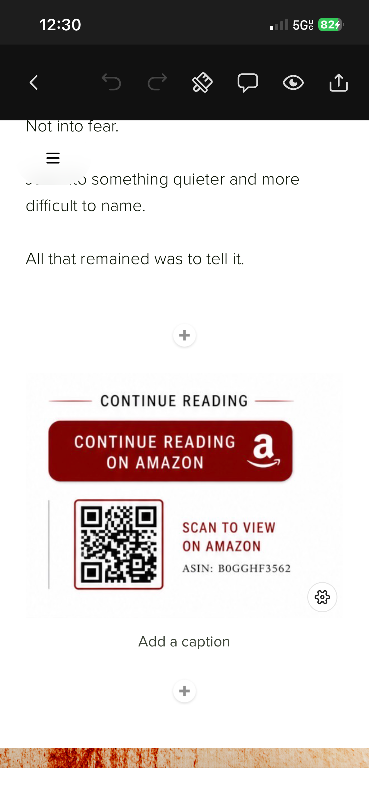
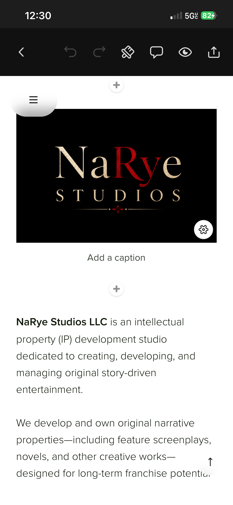
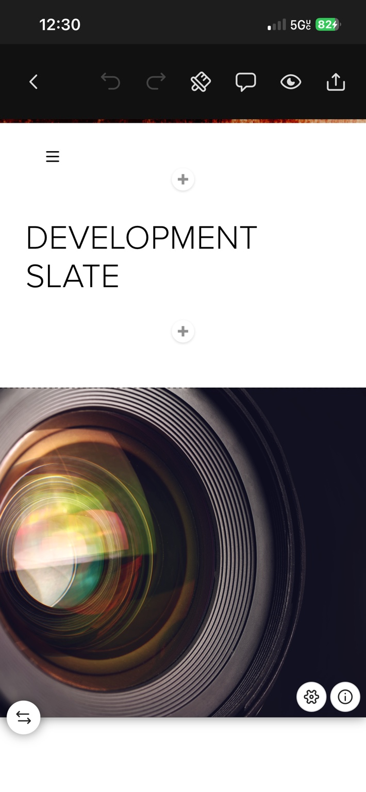

01
The Final Take
Psychological Supernatural Horror · Feature
Original narrative properties spanning psychological horror, supernatural horror, folk horror, thriller, and dark drama.

Psychological Supernatural Horror · Feature

Psychological Folk Horror · Feature

Psychological Thriller / Dark Drama · Feature